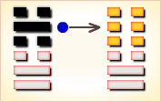

周易第60卦_节卦(水泽节)_坎上兑下
如有疑问互相交流，微信：470283584
周易第60卦详解
节卦原文
节。亨，苦节不可贞。
象曰：泽上有水，节。君子以制数度，议德行。
白话文解释
节卦：亨通。如果以节制为苦，其凶吉则不可卜问。
《象辞》说：本卦下卦为兑，兑为泽；上卦为坎，坎为水。泽中水满，因而须高筑堤防，这是节卦的卦象。君子观此卦象，从而建立政纲制度，确立伦理原则。
《断易天机》解
节卦坎上兑下，为坎宫初世卦。节说明需节制、节约，停止挥霍，这样才能居家康宁。
北宋易学家邵雍解
操守节度，适可而止；审时度势，能知变通。
得此卦者，宜安分守己，切忌贪心不足，诸事必须节制，不宜过份，更要戒酒色。
台湾国学大儒傅佩荣解
时运：品行端正，名利自成。
财运：正派经营，富裕可求。
家宅：富有之家；婚姻吉祥。
身体：节制饮食。
传统解卦
这个卦是异卦（下兑上坎）相叠。兑为泽，坎为水。泽有水而流有限，多必溢于泽外。因此要有节度，故称节。节卦与涣卦相反，互为综卦，交相使用。天地有节度才能常新，国家有节度才能安稳，个人有节度才能完美。
大象：泽为池沼，坎水在上，喻蓄积及约束水份不使流失，但水位过高，则成泛滥。
运势：有志不能伸，诸事必须节制，不宜过份，更要戒酒色。
事业：正处在发展时期，一定要注意切勿冒进。但更不应放弃良好的机遇，只要坚持遵道守义的原则，可大胆行动。这样，事业可以继续兴旺发达。
经商：市场行情好，对自己很有利，应该努力开拓，勿失去机会。不过，头脑一定要冷静，投入应有限度，适可而止，该收则收。
求名：严格要求自己，办事知道节度，不走极端，可以通行无阻，顺利前进。
婚恋：不要陷入情不自禁的地步，顺其自然会有好结果。
决策：抓住机遇，勿失良机。适当节制自己的行动，不可勉强，更不可冒险，恰如其分。一切不可拘泥，该变就变。但是，该节制的时候一定要节制。节制必须有限度，过于节制就成为苦，不会有好的结果，这叫适得其反，务必十分注意。
台湾张铭仁解卦
节：表示节制之象。主是个状况卦，吉凶未定之象。卦中所现，提醒卜卦之人，事事有过于放纵之象，尤其是在金钱方面，投资理财需节制有守为安。感情则要多留意自己的言行举止，已有过份之态或对对方过于放纵之势。
解释：节制，节约。
特性：理想高远，但与现实差距大，不过却有恒久的耐力，有志者是竟成。宽以待人，严以律己，社会声誉不错。
运势：有志不能伸，诸事必须节制，不宜过份，更要戒酒色。
家运：谨守做人处事的规范，则可得平安和乐之家庭。
疾病：注意泌尿及消化系病变，宜速就医。
胎孕：可求神保产母，否则有厄。
子女：儿女多温柔孝顺。但若长辈行为不检反招破，得不偿失也。
周转：远水难救近火。无望。
买卖：不得时也。
等人：不来，或须久等。
寻人：人说皆是虚言。有所藏身，不必去寻。想回来自己会回来。
失物：不能寻回。
外出：大胆外出顺利。
考试：须力求上进，不可怠忽。
诉讼：局势僵持不下，宜让则讼可解。
求事：再待时机，成功率小。
改行：不宜。
开业：开业宜缓图，计划周详后方可。
周易第60卦初九爻详解
初九爻辞
初九。不出户庭，无咎。
象曰：不出户庭，知通塞也。
白话文解释
初九：筮遇此爻，杜门不出，没有灾祸。
《象辞》说：杜门不出，因为其人知道所行必不通。
北宋易学家邵雍解
平：得此爻者，进取不利，宜守旧。
台湾国学大儒傅佩荣解
时运：闭门修行，平安是福。
财运：不利行商，可以开店。
家宅：可以安居；夫妇得当。
身体：安居静养。
初九变卦
初九爻动变得周易第29卦：坎为水。这个卦是同卦（下坎上坎）相叠。坎为水、为险，两坎相重，险上加险，险阻重重。一阳陷二阴。所幸阴虚阳实，诚信可豁然贯通。虽险难重重，却方能显人性光彩。
周易第60卦九二爻详解
九二爻辞
九二。不出门庭，凶。
象曰：不出门庭，失时极也。
白话文解释
九二：筮遇此爻，杜门不出，也有凶险。
《象辞》说：杜门不出，也有凶险，因为坐失良机，错误已极。
北宋易学家邵雍解
凶：得此爻者，时运不佳，事多乖离，宜动不宜静。做官的不得时运。
台湾国学大儒傅佩荣解
时运：因循自误，坐失良机。
财运：错过时机，不赚反赔。
家宅：屋内无人；旷怨难免。
身体：行走艰难。
九二变卦
九二爻动变得周易第3卦：水雷屯。这个卦是异卦（下震上坎）相叠，震为雷，喻动；坎为雨，喻险。雷雨交加，险象丛生，环境恶劣。“屯”原指植物萌生大地，万物始生，充满艰难险阻，然而顺时应运，必欣欣向荣。
周易第60卦六三爻详解
六三爻辞
六三。不节若，则嗟若。无咎。
象曰：不节之嗟，又谁咎也。
白话文解释
六三：不节俭则困穷，处困穷则知悔过，知悔过则可以无灾难。
《象辞》说：奢侈带来了悔恨，这是谁之过？
北宋易学家邵雍解
平：得此爻者，多辛苦，少收获。
台湾国学大儒傅佩荣解
时运：得而后失，叹息无奈。
财运：不知守财，咎由自取。
家宅：先富后贫；先喜后悲。
身体：饮食不节致病。
六三变卦
六三爻动变得周易第5卦：水天需。这个卦是异卦（下乾上坎）相叠，下卦是乾，刚健之意；上卦是坎，险陷之意。以刚逢险，宜稳健之妥，不可冒失行动，观时待变，所往一定成功。
周易第60卦六四爻详解
六四爻辞
六四。安节，亨。
象曰：安节之亨，承上道也。
白话文解释
六四：安于节俭遵礼的生活，通泰。
《象辞》说：安于节俭遵礼的生活之所以吉利，是因为顺从了君上的旨意。
北宋易学家邵雍解
吉：得此爻者，秉公守法，安于正道，福利可获。做官的会得到上司的欣赏，升迁有望。
台湾国学大儒傅佩荣解
时运：平安是福，听命行事。
财运：安居外地，一切节俭。
家宅：平安无事；夫妻平顺。
身体：病由口入。
六四变卦
六四爻动变得周易第58卦：兑为泽。这个卦是同卦（下泽上泽）相叠。泽为水。两泽相连，两水交流，上下相和，团结一致，朋友相助，欢欣喜悦。兑为悦也。同秉刚健之德，外抱柔和之姿，坚行正道，导民向上。
周易第60卦九五爻详解
九五爻辞
九五。甘节，吉，往有尚。
象曰：甘节之吉，居位中也。
白话文解释
九五：以节俭遵礼为乐，吉利。秉此而行，所往必得别人资助。
《象辞》说：以节俭遵礼为乐之所以吉利，因为九五之爻，所居恰当，像人居德行义，自然获得人家资助。
北宋易学家邵雍解
吉：得此爻者，正当好运，谋望有成。
台湾国学大儒傅佩荣解
时运：苦尽甘来，功名必显。
财运：贩米外地，获利必丰。
家宅：正直节俭；百年好合。
身体：节食可治。
九五变卦

九五爻动变得周易第19卦：地泽临。这个卦是异卦（下兑上坤）相叠。坤为地，兑为泽，地高于泽，泽容于地。喻君主亲临天下，治国安邦，上下融洽。
周易第60卦上六爻详解
上六爻辞
上六。苦节，贞凶。悔亡。
象曰：苦节贞凶，其道穷也。
白话文解释
上六：以节俭遵礼为苦，卜问得凶兆，其人将为家道败落而悔恨。
《象辞》说：以节俭遵礼为苦，卜问得凶兆，正如上六阴爻孤悬一卦之尽头，像人走入穷困不通的境地。
北宋易学家邵雍解
凶：得此爻者，不得天时，名利皆无。做官的不知变通，前途渺茫。
台湾国学大儒傅佩荣解
时运：不知变通，贫困一生。
财运：失去良机，怨叹无用。
家宅：开明为宜；顽固难处。
身体：病势垂危。
上六变卦
上六爻动变得周易第61卦：风泽中孚。这个卦是异卦（下兑上巽）相叠。孚本义孵，孵卵出壳的日期非常准确，有信的意义。卦形外实内虚，喻心中诚信，所以称中孚卦。这是立身处世的根本。